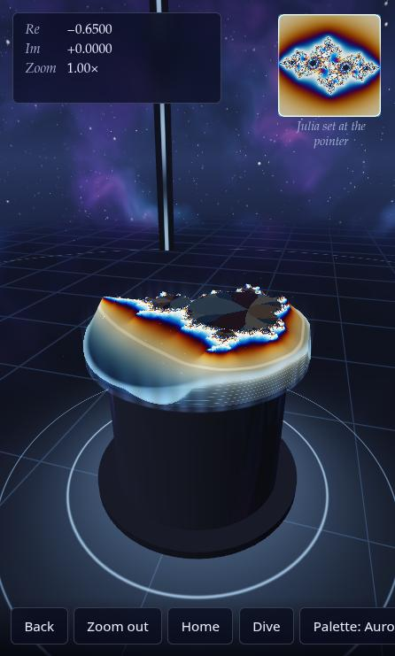
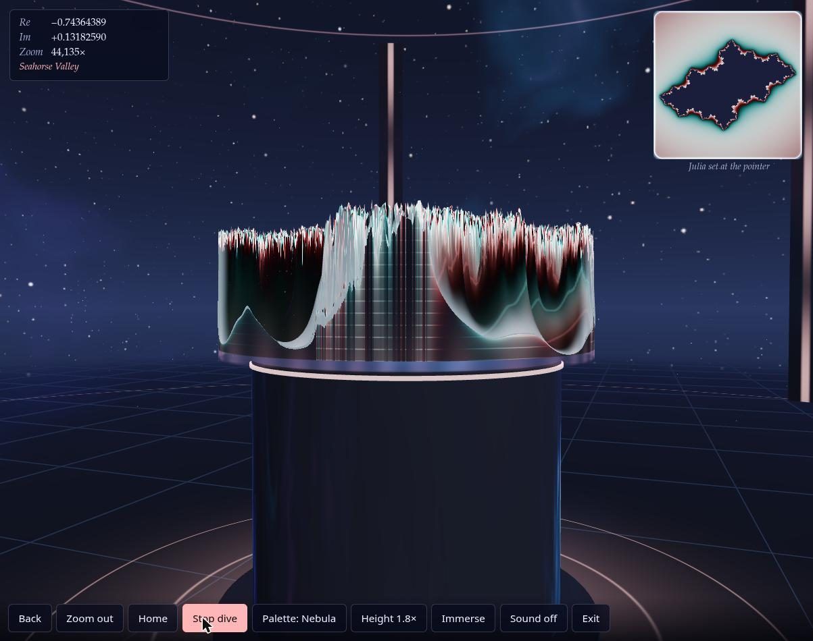
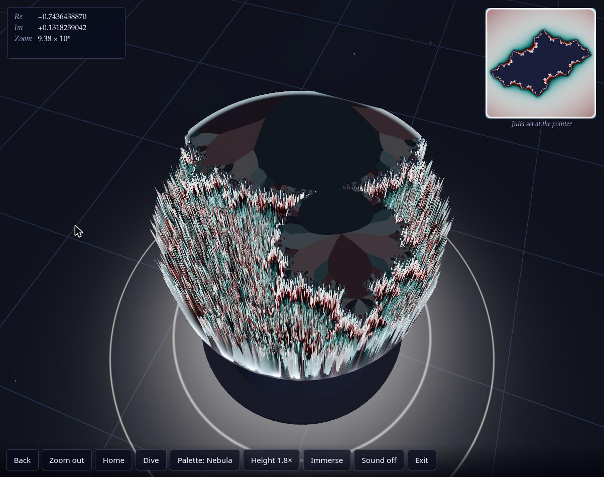
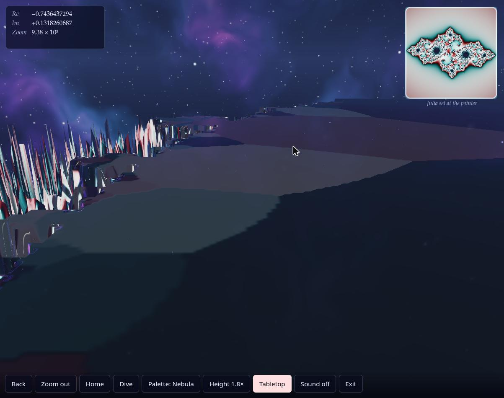

Phase 1 · Browser review
Browser Review — candidate-02 is Opus 5.5 · v1
- Blind id
candidate-02(what the reviewer was told)- Candidate
- hidden in blind viewOpus 5.5 · v1 ·
Anthropic-Web-Opus5.5-Max-v1 - Prompt
- v1
- Review type
- Browser (Review/Browser-Review/ GitHub)
Revealed mapping: candidate-02 = Opus 5.5 · v1 (Anthropic-Web-Opus5.5-Max-v1), from
ReviewOrchestrator/blind-mapping.json GitHub.
Overall score
8/ 10 overall score
Parsed as the first number of this line, verbatim:
## Overall score: 8 / 10
Review, verbatim
The reviewer's REVIEW.md as written (its heading is shown above). REVIEW.md GitHub
| Criterion | Score | Reason |
|---|---|---|
| 1. Loads & renders | 9 | Single inline script, FCP ≈ 68 ms on reload, a 3D scene is live behind the landing card at once, no console messages at all. |
| 2. Done-when (desktop-checkable) | 8 | A real room (starfield and nebula sky, grid floor, pillars, glowing rings) with a raised 3D Mandelbrot height field on a pedestal. A clear XR path exists in code (Enter VR/AR buttons), but they are hidden here, so I couldn't exercise that path. |
| 3. Visual wow | 8 | The holographic tabletop, palettes and live Julia inset are striking, and deep zoom (≈1e6×) holds detail. Spiky "grass" aliasing at the boundary, faceted interiors and terraced slabs in Immerse take some of the polish off. |
| 4. Usability & controls | 7 | Clear hint line, readable Re/Im/Zoom HUD, named locations ("Seahorse Valley"), and every button works. No keyboard navigation, Home doesn't reset the camera orbit, and the phone toolbar hides half its buttons behind a horizontal scroll with no affordance. |
| 5. Robustness | 8 | Zero console errors or warnings. Resizes cleanly with no page scroll. 60 fps across every mode on re-test, though one early session ran at ~2 fps that I couldn't reproduce. |
| 6. XR readiness & messaging | 7 | Feature-detects with isSessionSupported and hides VR/AR when they're unsupported. A plain-language note offers the browser fallback, and phone-only "Look around" and "Cardboard" modes exist in the DOM. The note says "no WebXR" even though navigator.xr exists (it's really "no XR device"). |
Steps performed
- Opened my own tab, loaded
http://localhost:8702/, waited 3 s, took a screenshot. A landing card ("z ↦ z² + c / The Mandelbrot set as a place you can stand in") sits over a live 3D room: starfield and nebula sky, grid floor, pillars, and a fractal height field on a pedestal. Only "Explore in this browser" is shown, with the note "This browser has no WebXR, so VR and AR are unavailable. You can still explore it in the browser." (01-landing.jpg) - Introspected with JS.
navigator.xris present and the context is secure.isSessionSupported('immersive-vr'/'immersive-ar')both return false, and#bVR/#bARexist withdisplay:none. There's one canvas and one inline script. The WebGL renderer is the real GPU (ANGLE on AMD RX 6650 XT). Viewport meta includesviewport-fit=cover. - Reloaded with console capture on. No messages of any kind. FCP 68 ms, load event 87 ms.
- Clicked "Explore in this browser". A HUD (Re/Im/Zoom) appears top-left, a "Julia set at the pointer" inset top-right, a hint line ("Click the landscape to dive in. Drag it to pan, scroll to zoom, drag the background to orbit."), and a bottom toolbar: Back, Zoom out, Home, Dive, Palette, Height, Immerse, Sound, Exit. The camera slowly auto-orbits. (
02-explore-tabletop.jpg) - Measured frame rate (first session). About 2 fps (rAF every ~600 ms) with the main thread idle (max setTimeout gap 4 ms, no long tasks). It rose to ~17 fps at the 446×741 phone size. Re-tested later, including after a fresh reload: a steady 60 fps on the landing page, in explore, while diving, in Immerse, and with every palette and height. I couldn't reproduce the 2 fps phase, so it was probably a one-off warm-up or environment state, but it's worth noting.
- Clicked a ridge on the landscape. It animated a dive: Zoom 1× → 3×, recentred to −0.5675 −0.3042i, and the Julia inset updated.
- Scrolled the mouse wheel up 5 ticks. Zoom went 3× → 5.22× and the terrain rose into tall ridges.
- Palette button. Cycles Aurora → Nebula → Ember → Glacier → Spectrum → Aurora, and recolours terrain and Julia inset instantly.
- Height button. Cycles 1× → 1.8× → 0.4× → 1×, and the terrain relief changes visibly.
- Dragged the background. It orbits the camera. Sensitivity is high: a 300 px drag took the view nearly to the horizon.
- Home. Resets the fractal to −0.65 + 0i at 1×, but does not reset the camera orbit.
- Dive button. Auto-zooms into "Seahorse Valley". The label appears in the HUD and the button turns into a highlighted "Stop dive". It reached 331× after 8 s, 44,135× after 18 s, and ≈9.4×10⁵ when stopped. (
04-dive-44k-side.jpg) - Orbited to a top-down view at ≈1e6× zoom. Boundary detail still resolves and there's no precision breakdown. There are dense spiky "grass" artefacts along the boundary and faceted, flat-shaded polygon patches inside the set. (
05-deepzoom-1e6-top.jpg) - Immerse. Switches to a first-person, landscape-scale view: you stand on the fractal terrain under the nebula sky, and the button becomes "Tabletop". It's striking, but it shows terraced, blocky slabs and smeared flat planes. (
06-immerse.jpg) - Sound toggle. Label switches "Sound off" ↔ "Sound on". I couldn't hear the audio.
- Zoom out. Zoom ÷3 (9.38e5 → 3.13e5). Back steps back to the previous view.
- Keyboard. Escape exits to the landing page. Arrow keys,
+,=,handpdid nothing. - Hovered over the landscape. The Julia inset tracks the pointer position.
- Exit. Returns to the landing card, and the 3D scene keeps rendering behind it.
- Phone size (window 390×844 → 446×741 viewport, the browser's minimum). The landing card reflows well. In explore, the HUD and Julia inset scale down and there's no page-level horizontal scroll, but the toolbar (
nav,overflow-x:auto,flex-wrap:nowrap) is 865 px wide in 446 px. "Palette" is cut off and Height, Immerse, Sound and Exit sit offscreen, reachable only by horizontal scroll with no visual hint. Buttons are 42 px tall, which is OK for touch. (03-phone-390.jpg) - Restored the window size (viewport back to 1203×950) and closed my tab.
No WebXR emulator was installed, so I didn't enter VR/AR sessions.
Overall score: 8 / 10
Top 5 issues
- Major: phone toolbar overflows and hides controls. At 446 px the bottom
navis 865 px wide (overflow-x:auto,nowrap). Exit, Immerse, Height and Sound are offscreen with no scroll cue. Fix: wrap to two rows, collapse the secondary actions into a "⋯" menu, or use icon buttons below about 600 px. - Major: rendering artefacts at high zoom and in Immerse. Dense spiky "grass" aliasing along the boundary, faceted flat-shaded polygons inside the set, and terraced slabs and smeared planes in Immerse (screenshots 05 and 06). Fix: filter or limit height by local derivative and distance, smooth interior shading (e.g. distance estimate), and raise raymarch step precision near the camera in Immerse.
- Minor: possible frame-rate collapse. In the first session rAF ran at ~600 ms per frame (2 fps) on a desktop RX 6650 XT with the main thread idle. Later sessions held 60 fps, and I couldn't reproduce it. Fix: add an adaptive-resolution or fps governor so a transient stall degrades resolution instead of the frame rate. That matters in an HMD.
- Minor: camera controls. Home resets the fractal but not the orbit. The orbit drag is very sensitive, and there's no keyboard navigation (arrows, +/−, WASD). Fix: make Home reset the camera pose too, lower the orbit gain, and add keyboard pan/zoom/orbit.
- Minor: XR-unavailable message is slightly inaccurate. It says "This browser has no WebXR" when
navigator.xrexists but there's no XR device or runtime. The hidden buttons also give no hint of what users would see on a headset. Fix: say "No VR/AR device detected", and optionally show disabled VR/AR buttons with a tooltip explaining how to open the page on a Quest, Pico or phone.
Strengths
- Polished first impression: the live 3D room appears right away behind an elegant landing card, with zero console noise and an FCP of about 70 ms.
- A genuine 3D room: a sky dome with nebula and stars, grid floor, pillars, light rings, and the Mandelbrot height field presented as a holographic tabletop. Immerse lets you stand inside the landscape.
- Deep-zoom capability: the auto "Dive" reaches about 1e6× in Seahorse Valley with the detail intact, and the HUD names the location.
- Rich, working controls: click-to-dive, wheel zoom, orbit, Back/Zoom out/Home, 5 palettes, 3 height levels, sound, and a live Julia-set inset that follows the pointer.
- Thoughtful XR and mobile paths:
isSessionSupportedgating, a browser fallback, and "Look around" and "Cardboard" modes for phones without WebXR.
Verdict
This is a high-quality, visually striking WebXR Mandelbrot experience: a real virtual room, a 3D height-field fractal, deep zoom, and a full set of working controls, with clean load and console behaviour. The main weaknesses are the phone toolbar overflow, the aliasing and terracing at high zoom and in Immerse, and an unreproduced early frame-rate stall. The XR entry is gated properly but couldn't be exercised on this desktop.
Screenshots 6

01-landing.jpgOpus 5.5 · v1
02-explore-tabletop.jpgOpus 5.5 · v1

03-phone-390.jpgOpus 5.5 · v1

04-dive-44k-side.jpgOpus 5.5 · v1

05-deepzoom-1e6-top.jpgOpus 5.5 · v1

06-immerse.jpgOpus 5.5 · v1Prompt
The exact prompt the reviewer received. PROMPT.txt GitHub
Show the full prompt (38 lines)
You are a blind reviewer in a comparison of AI coding assistants. An AI assistant was given the task quoted below. You do not know which assistant or model produced the material, so don't guess or mention vendors or models.
The task given to the assistant (verbatim):
<<<
Create a standalone html file that uses WebXR to visualize the Mandelbrotset in a virtual room. Focus on delivering the highest possible visual wow effect and good usability.
Requirements: Viewable on HMDs like Meta Quest 3, Steam Frame, Pico VR 4 Ultra (not an exhaustive enumeration) and on modern Android and Apple phones.
Done when:
1. A person wearing a VR headset or AR glasses or a mobile phone can open the HTML file on the device (Browser) and enter a virtual room in which the Mandelbrot set is getting visualized in 3d.
>>>
Your material: the delivered HTML file, served by a local static server that the orchestrator has already started:
http://localhost:8702/ (serves index.html of candidate-02)
Use the Claude in Chrome browser tools (mcp__claude-in-chrome__*). If they are deferred, load them first with ONE ToolSearch call, e.g. "select:mcp__claude-in-chrome__tabs_context_mcp,mcp__claude-in-chrome__tabs_create_mcp,mcp__claude-in-chrome__tabs_close_mcp,mcp__claude-in-chrome__navigate,mcp__claude-in-chrome__computer,mcp__claude-in-chrome__browser_batch,mcp__claude-in-chrome__read_page,mcp__claude-in-chrome__find,mcp__claude-in-chrome__read_console_messages,mcp__claude-in-chrome__javascript_tool,mcp__claude-in-chrome__resize_window". Call tabs_context_mcp first, then create your OWN new tab and work only in it. Visit no URL other than http://localhost:8702/. Close your tab when you are done. Avoid triggering alert/confirm/prompt dialogs. Do not read the HTML source from disk or other files. You may use javascript_tool for light introspection (e.g. whether navigator.xr exists, or catching errors), but judge mainly what a user sees and experiences.
Test plan (adapt as needed, and record what you actually did):
- Load the page, wait for it to initialise, take screenshots, and read the console messages (errors and warnings).
- Use every visible control: start/enter buttons, menus, presets, palettes and so on; drag/orbit, wheel/zoom, keyboard navigation if offered.
- Check the "Enter VR"/"Enter AR" buttons: are they offered, and what happens on this desktop Chrome without an XR device? Is the messaging clear? Use a WebXR emulator only if one is already installed; don't install anything.
- Phone layout: resize the window to a phone-like size (e.g. 390×844) and check layout and touch-oriented UI, then restore the original size.
- Note responsiveness and frame-rate impressions, and anything broken.
You may save up to 6 key screenshots (save_to_disk) and copy them into /tmp/claude-1000/-home-mpuchstein-Dev-AI-MandelbrotXR/14a78f0a-2d81-433c-9df8-b0d851d25219/scratchpad/blind-out/browser/candidate-02/screenshots/ to reference them from the review.
Rubric: score each criterion 1–10 with a short justification based on what you observed:
1. Loads & renders (errors, time to first meaningful frame).
2. Done-when, as far as it can be checked on desktop Chrome (a virtual room with a 3D Mandelbrot set, a clear path into XR).
3. Visual wow effect.
4. Usability & controls (desktop and phone-sized layout).
5. Robustness (console errors, resizing, performance impression).
6. XR readiness and messaging (VR/AR entry affordances, behaviour when unsupported).
List the **Steps performed**, with the outcome of each.
Then add: **Overall score (1–10)**, **Top 5 issues** (each with severity critical/major/minor, location or evidence, and a suggested fix), **Strengths** (up to 5), and a 2–3 sentence **Verdict**.
Output: write the review as Markdown to exactly this file (create the directory if needed):
/tmp/claude-1000/-home-mpuchstein-Dev-AI-MandelbrotXR/14a78f0a-2d81-433c-9df8-b0d851d25219/scratchpad/blind-out/browser/candidate-02/REVIEW.md
Start it with "# Browser Review — candidate-02", followed by a score table (criterion | score | one-line reason). Write no other files except where stated above. Finish by replying with a 3-line summary: overall score, verdict, biggest issue.Links
- Candidate page: Opus 5.5 · v1 v1
- Other reviews of this candidate:
- HTML review · overall 8.5
- Transcript review · overall 7
- Review agent log: TRANSCRIPT.md GitHub
- Review folder: Review/Browser-Review/Anthropic-Web-Opus5.5-Max-v1/ GitHub
- Blind mapping: ReviewOrchestrator/blind-mapping.json GitHub
- Builder chat transcript: TRANSCRIPTION.md GitHub
Press Reveal names to see the links to the candidate, its folder and its builder transcript.